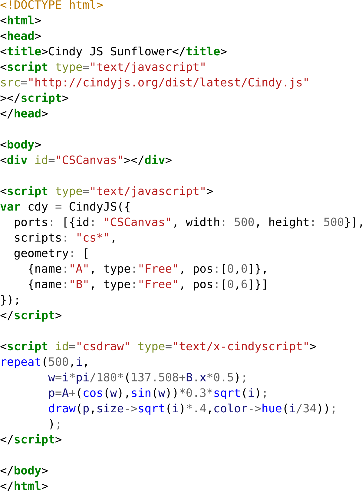
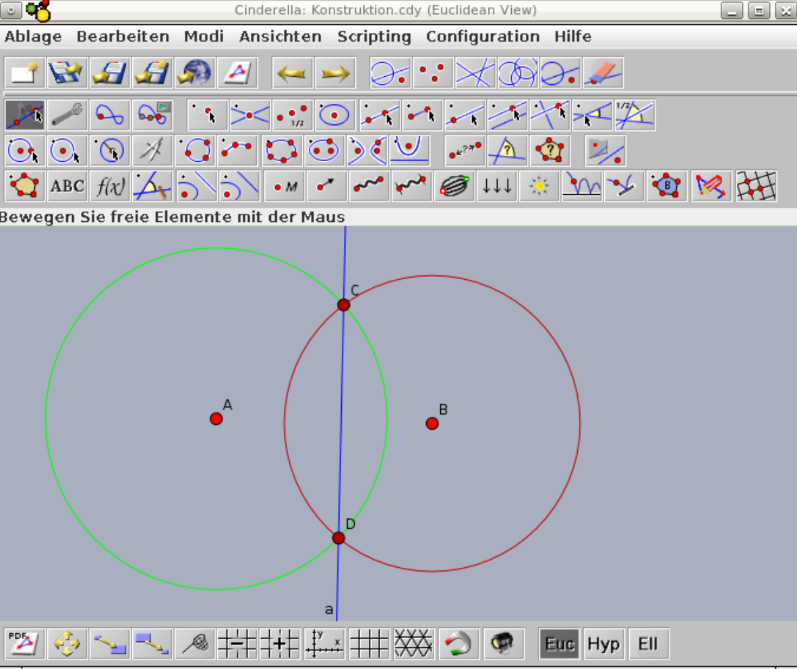
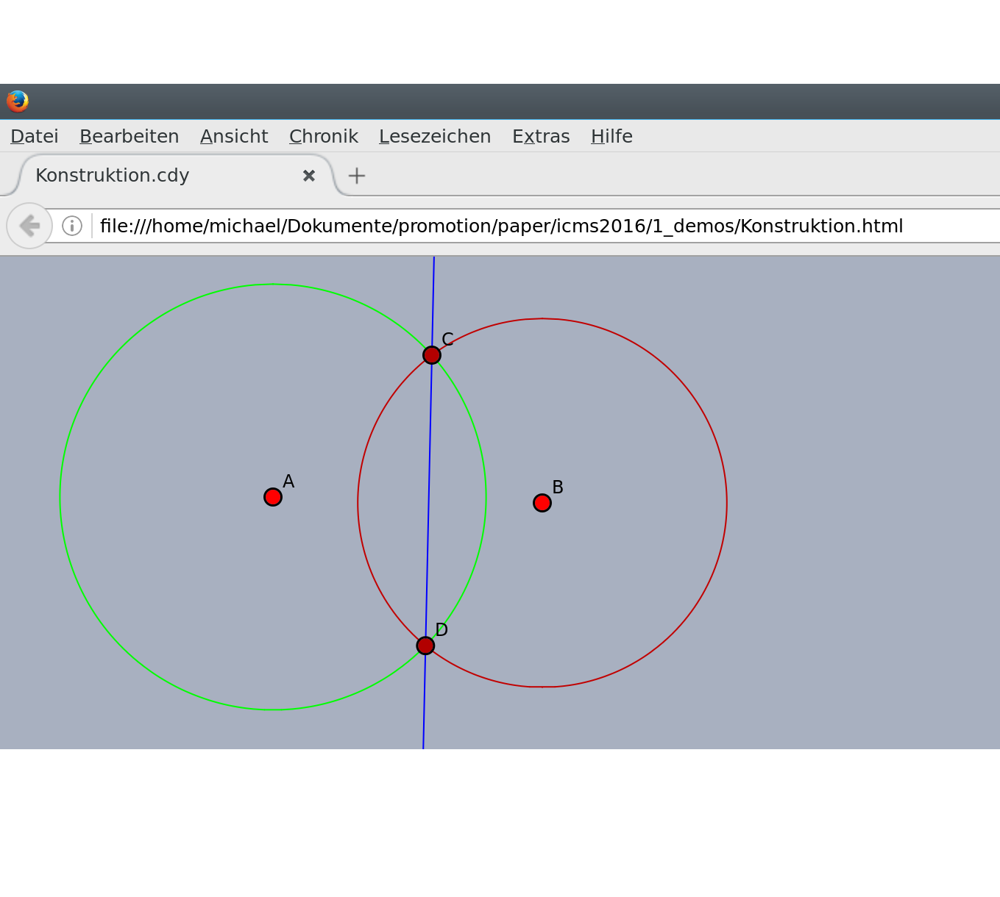

some examples
intersection of conics
scripted sunflower

export demo


challenges
challenges
- mathematics (geometry, complex analysis, ...)
- numerics (stability, convergence, ...)
- computer science (implementation, efficiency, ...)
complex tracing
analytic continuation: circle intersection
CindyJS in the wild
shopping mall

iOrnament post processing
iOrnament
- create ornaments on your iPad/iPhone
- connects mathematical beauty with art